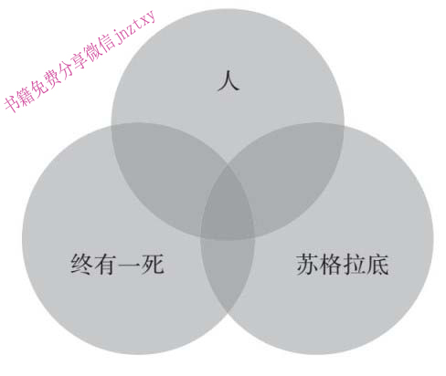
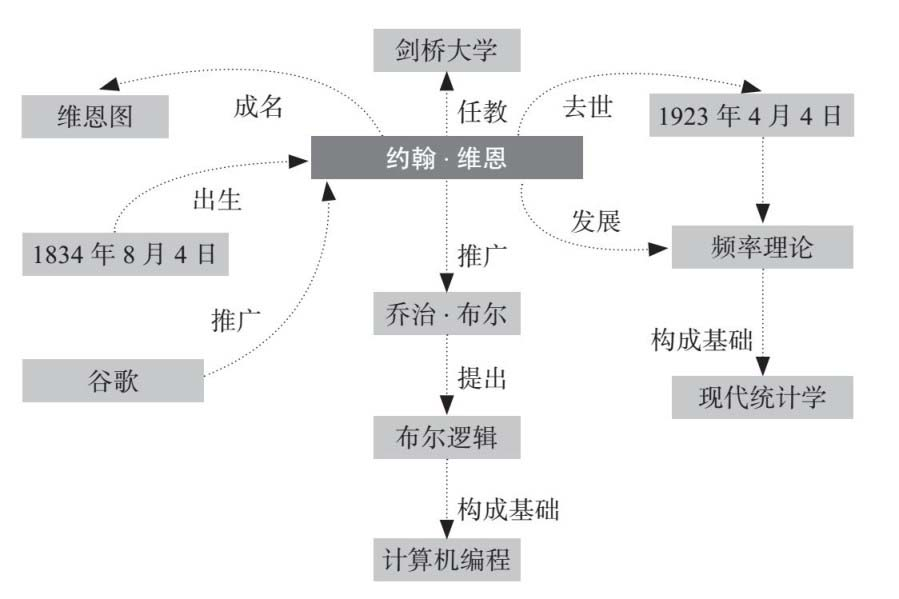

第五章
融会贯通
寻找知识的内在联系，发现知识背后的规律是学习的根本目的。在这个过程中，系统化思维是必不可少的，而构成系统化思维的因素也有很多，比如推论假设、实验验证、类比推理等。
知识的深层体系帮助我们实现学习的终极目的
阿尔伯特·爱因斯坦经常进行思维实验。 1 最早的一次是在他十几岁的时候，大约是1895年，爱因斯坦当时住在瑞士。当时的他脸庞瘦削清秀，长着一头浓密的头发。他在当地一所高中上学，选择了物理课和化学课，经常整个晚上沉浸在课本里。
在一个思维实验中，爱因斯坦把一道光束假想成像波一样运动，有正常的波峰、波谷，就像海上的波浪一样。然后爱因斯坦想象自己在这道光束旁边，与光束同速运动。如果是这种情形，爱因斯坦恰好在光束的旁边，那么这条光束在他看来就是静止的、完全不动的。
对此我们可以类比一下，你开车以60英里（约97千米）时速前进，如果你看到另一辆车以同样的速度与你同向行驶，那么旁边的车在你看起来就像树木、石头一样，是静止不动的。
爱因斯坦马上意识到有些地方说不通。光速一般被认为是个常量，但是在爱因斯坦的大脑里，他可以想象出这道光束看起来静止不动的情况，至少在光束旁边与光束一起运动的人看来是静止的。而这两点不能同时正确。爱因斯坦后来写道：“这就造成了各种强烈的冲突。” 2
随机测试题 18
判断：用于做重点标记的荧光笔是一种很有效的学习工具。
作为一种学习方式，思维实验可以追溯到古希腊。总的来说，思维实验就是要把一个观点想透彻，这就促使人们理解如何能够把一项技能或知识系统地结合在一起。在本章中，我们将详细阐述，在一个专业知识领域，如何通过发现其中的相互关系来促进我们的学习活动。
理解一个课题的深层内在联系，通常是学习过程中最为困难的部分，然而这也是我们最终的学习目的，这是我们精通一门专业的途径。事实上，爱因斯坦说，正是上面提到的思维实验最终促使他提出了狭义相对论。爱因斯坦后来写道：“在这个思维实验中，就能看到狭义相对论的萌芽。”
系统化思维促进知识体系的深层理解
对系统化思维的早期研究，始于爱因斯坦发表相对论的时代。系统化思维研究活动开始于芝加哥大学。作为研究项目的一部分，心理学家查尔斯·贾德让两组研究对象朝水下的目标投掷飞镖。 3
第一组研究对象就是简单地重复练习，朝着4英寸（约10厘米）深的水下目标投掷飞镖；第二组研究对象也做这样的练习，此外还要学习光折射的原理，即光线从水中射出来会改变方向的原理。
然后贾德把水下目标挪到12英寸（约30厘米）深的地方。两组对象对4英寸远的目标投掷结果都很好，然而目标距离变为12英寸时，只有第二组还能比较准确地投到目标上。
看起来懂得光线与水之间关系的学生，在条件有所变化的情况下，更有可能击中目标。也就是说，他们可以把学到的知识用于这种新的环境中。因为他们的知识属于更丰富的思维系统的一部分，所以会变得更加灵活可用。
认知科学家林赛·里奇兰德近年来在系统化思维研究方面发表了不少论文。在一篇具有里程碑意义的论文中，里奇兰德表示，无论是构建概念、解决问题还是在任何运用批判性思维的情况下，人们首先都需要掌握一个专业领域中的各种模型。
里奇兰德耗费多年时间进行了多学科的学术研究后得出上述结论。她横跨从数学到历史学的多个学科领域，发现所谓精通就是指对知识结构如何相互关联具有清晰的认识。“高层次思考的能力基础主要就是对事物内在关系的理解能力。”我到芝加哥大学拜访里奇兰德的时候，她这样告诉我。
专家通常都采用这种系统化的思维方式。在各自的领域里，专家们能够理解事物是如何有机结合在一起的，因此他们能够通过混乱复杂的表象发现问题的本质。巴勃罗·毕加索据说曾经七笔勾勒出一头牛；瑟古德·马歇尔 [1] 大律师也有类似的技巧，他可以在一堆杂乱无章的法律细节中，迅速发现关键论点；我们再想象一下甲壳虫乐队那些纯净优美的流行乐，他们把极其复杂的音乐表现得极其质朴简约。
里奇兰德进一步研究发现，当人们能够把所掌握的知识融会贯通，他们就能培养出更强的思维推理能力。例如，如果有人对数学体系和各部分的相互关系理解得更深刻，他们就掌握了数学领域更高深的推理技巧；如果有人对历史事件如何相互影响了解更多，那么他们对历史就有进一步的解读。“有效学习最终可归结为对事物内在关系的思考。”里奇兰德说。
我们以海洋研究为例。里奇兰德说，有的人只是停留在孤立的事实内容上，比如水温或者水的体积。如果想提升思考技巧，形成对海洋的系统化理解，我们可以思考一些这样的问题：如果水中的含盐量上升会怎样？海水和湖水的区别是什么？海中的暗礁如何影响洋流？
这类问题非常有助于人们改进在某一具体领域内的思考，最终对一个概念、课题或者技巧形成充分的理解。“只是记住一堆事实其实没什么用处，”里奇兰德告诉我，“想要有效地学习，人们需要理解因果关系，发现其中的异同。”
里奇兰德基于物理学和数学这类学术领域的研究形成了自己的理论，与她的谈话也激发了我的兴趣，我想看看她的理论是否能够应用在一些学术性不那么强的领域。于是我报名参加了一个品酒课程。人们当然有很多提高品酒技巧的方式，有的人会遍访全球的葡萄酒庄，或者参加各种研讨会，还有就是尝遍各种葡萄酒。
为了检验里奇兰德理论的有效性，我走进了讲述葡萄酒与食物搭配方法的课堂。我想要搞清楚，思考事物的内在关系是否能够帮助我获得更深刻的认识，以此优化我的知识体系。
葡萄酒专家阿曼达·韦弗–佩奇在一个下着雨的星期五晚上开始了课程。韦弗–佩奇身穿白色的厨师服，从葡萄酒的基本知识讲起。她讲到了酸度，详细解释了鞣质，正是鞣质让红酒具有了明显的口味差异。质地也非常重要，韦弗–佩奇解释说：“可以把酒体轻盈的红酒比作脱脂牛奶，而酒体厚重的红酒可以比作全脂牛奶。”
韦弗–佩奇认为，红酒搭配主要在于相辅相成，也就是说，酒和食物要相互支撑，营养才能阴阳平衡。这就是为什么酒体轻盈的红酒要配口味清淡的事物，比如水果，而酒体厚重的红酒可以很好地搭配烧烤牛排这样的食物。韦弗–佩奇说：“把口味较轻的红酒搭配给牛排这类口感厚重的食物，红酒的味道就完全被压下去了。”
开始时，我对韦弗–佩奇的说法半信半疑。就像谈论高端艺术和炫酷汽车一样，人们谈论起红酒，在很大程度上也带有炫耀的意味。然后，我们就开始品尝第一种搭配：一份山羊奶酪沙拉搭配西班牙阿尔巴利诺（Albariño）红酒。两者的搭配关系是清楚的，这让我对红酒的品质有了一些前所未有的认识。这款红酒绵软中带有酸橙味道，其特点显而易见。
之后我们继续品尝下一款酒——一款澳大利亚出产的席拉思（shiraz）红酒。韦弗–佩奇把这款酒与薄荷香蒜沙司烤羊肉搭配。这款酒口味清澈丰富，就像中世纪狂欢节一般极具诱惑力。当我把里奇兰德的理论告诉韦弗–佩奇后，她点头称是，对我说：“搭配就是按照酒的特点给人们一些指导。”
实际上，韦弗–佩奇上烹饪学校头两年的时候有过类似的经历。一个老师给她一款富含鞣质的酒，品尝后她的嘴唇有一种中学时期初吻般皱皱涩涩的感觉。然后这个指导老师又让她吃了一口车达乳酪，她说：“油滑的感觉消除了鞣质的涩味，感觉就完全不同了。”
结束了两个小时的课程后，我的品酒知识还是有所欠缺。韦弗–佩奇对红酒搭配很有心得。如果我以前吃麦当劳薯条的时候知道随便选瓶便宜的红酒搭配一下，那感觉一定非常不同。我可以非常肯定地说，我对红酒的认识已经完全不同了，我隐约有了一些红酒专家对红酒的思考方式，开始以一种比以往更系统化的方式重新看待红酒世界。
随机测试题19
一个小孩儿做基础算术题，他写出“3+3=6”。孩子的家长想看看孩子是否能理解更深一层的加法法则。那么，他们不应该怎么提问呢？
A.你知道其他哪两个数字加到一起也等于6吗？
B.你能解释一下你的答案吗？
C.为什么这是正确的答案呢？
D.你的答案正确吗？
在一个专业领域中寻找内在联系的重要作用在于，它可以反映出该专业领域的深层结构。当我见到心理学家罗布·戈德斯通的时候，我才以一种尴尬的方式意识到学习过程中的这个阶段。 4
罗布·戈德斯通是布卢明顿市印第安纳大学的教授，他身材高大，有些秃顶，一副似笑非笑的表情。我们在华盛顿市中心的一个咖啡厅见面。
“你看起来像个聪明人，”戈德斯通和我聊了一会儿后对我说，“我可以测测你吗？”
“没问题。”我一边说，一边有点儿紧张地用手拨弄着手里的记事本。
于是戈德斯通给我出了一道题： 5
一个上岁数的国王打算把王国分给他的女儿们。王国里每一个小国可以分配给任何一个女儿（当然也有可能多个小国分配给同一个女儿）。国王总共有5个小国、7个女儿，那么一共有几种分法？
戈德斯通说完，我记下了一些要点：5个小国、7个女儿。然后开始画这几个小国的示意图，我觉得这种方式能帮我解题。
“这个和阶乘有关系吗？看起来有点像。”我问道。
戈德斯通挠了挠脖子，说：“嗯，差不多。”
我继续解题。
“可以给你点儿提示，”戈德斯通说，“如果老国王把德国给了其中一个女儿，他还可以把法国也给她。”
我点点头，但还是觉得太难。最后，戈德斯通把答案告诉了我。“如果待分配的5个物品，这里就是指小国，每一个都有7种可选项，那么一共有7×7×7×7×7或者就是75 种可能性。”
戈德斯通说这就是简单重复抽样的数学概念。这类题目通常在中学时讲授，可以归纳为一个公式：可选结果数的备选事件数次幂。
我为什么回答错了呢？要想回答这个问题，首先要理解问题的性质。戈德斯通这样的心理学家会把问题描述为表面特征和深层特征两个层次。表面特征通常就是具体的、表面的要素。在这道题中，国王的土地和国王的女儿就是问题的表面特征。
深层特征就是概念或技巧。在这道题中，根据戈德斯通所说，深层特征就是“简单重复抽样的概念，以及可选结果、备选事件的概念”。我在解这道题的时候，没有看到深层特征，反而被表面特征分散了注意力。
坐在咖啡厅的窗边，戈德斯通说，人们通常会被问题的表面细节分散注意力，他称之为“认知的最大障碍”。
让我们再看一个例子：
一个房子的主人打算把房间重新粉刷一遍。她给卧室、餐厅、起居室各选了一种颜色（可以是多个房间刷同一种颜色或者刷还没用过的颜色）。总共8个房间、3种颜色，问她有多少种刷房子的方法。
这也是戈德斯通研究项目中的问题。除非你已经有过解决简单重复抽样问题的经验，否则很难立即清晰地意识到这就是简单重复抽样问题。也就是说，我们无法马上意识到，不同的表面特征背后是完全相同的深层特征。“要想看到问题的内在关联结构，你需要看到国王女儿和颜料颜色在不同的具体场景中担负着同样的角色，这是可选的场景。”戈德斯通解释说。
那么，人们如何才能看到一个专业领域里具体问题的深层特征呢？让我们回到之前的关系体系。把我们所学的各种知识相互融合是非常有价值的，当人们看到多个表面细节不同的实例之后，就更可能理解隐藏在细节背后的关系体系。 6
戈德斯通在他的实验室也发现同样的情形：如果人们看到过不同表面特征的简单重复采样问题，他们理解核心概念就会容易得多，对深层的概念体系理解得也会更充分。
一系列的研究验证了知识相互融合所带来的价值。 7
20世纪90年代有一个研究项目：让一些年轻的女篮队员练习罚球。其中一组仅仅练习罚球，另外一组除了罚球以外，还要练习8英尺（约2.4米）外投篮和16英尺（约4.8米）外投篮。结果差异非常显著：练习多种项目的一组结果好得多，因为他们对罚球的基础技巧理解得更到位。
在其他学习领域，无论是记忆类测试还是解题技巧，也符合这样的规律：通过混合练习，把不同的例子交叉结合，就容易对隐藏在背后的关系产生更充分的理解。 8 如果对这套体系更敏感，实际结果要高出40%。
这项研究具有非常实际的应用价值，人们在练习的过程中，应当变换练习方法，避免重复。“最糟糕的方法就是连续不停地练习同一个内容。要像预防瘟疫一样防止这种情形的发生，”心理学家纳特·科内尔告诉我，“最好是集中时间进行练习，但是不要重复任何内容。”
比如，如果想学习美国历史，就需要阅读两篇关于美国独立战争的文章、两篇南北战争的文章，还有两篇“冷战”的文章。研究显示，如果学习者穿插读这些文章，他们对美国历史的理解就会更深入。他们可以先读一篇美国独立战争的文章，再读一篇南北战争的文章，之后再读一篇“冷战”的文章，然后重复这个过程读另外的那些文章。为什么这样有效呢？因为通过穿插阅读，可以帮助人们发现不同主题之间的相互关联。
又比如练习滑雪，人们可能会尝试不同环境下的滑雪体验，比如蜿蜒的山道、遍布雪包的山坡，以及从松软的雪地到坚实的冰面等不同的雪况。此外，练习木工活时，人们也会尝试不同的木料，比如橡木、松木或者杉木。
但人们通常不怎么变换他们的练习内容或实例。为了发现深层的联系，我们需要很多的实例。在戈德斯通的研究实验中，人们通常要尝试六七个例题后，才能掌握这个问题的深层结构。
更重要的是，我们需要把这些不同的实例进行直接对比。这种对比需要非常直接和明显。比如滑雪，一年前滑过松软的雪道，一年后直接尝试坚实的山道是不行的。不同学习方式交替进行的好处是，每一次练习之后都可以得到直接的感受。所以，冲下松软的雪道以后，马上试一试坚实的山道，就是不错的办法。
另外一个要点是，对关系的认识容易模糊。通常发现问题背后的关系体系、看到深层结构并不容易。心理学家布赖恩·罗斯建议，人们应当把他们发现的这些深层结构确切地提出来。罗斯研究发现，如果把概念，也就是一个问题的深层结构写在题目的旁边，人们解题就会容易得多。
所以，如果有人想解下面这道题：
一个人快速滑动滑板进入弧形坡道，滑动速度约每秒6.5英里（10.5千米）。跳离坡道后，速度降到每秒4英里（6.4千米）。滑板选手和滑板总重量55千克，请计算坡道高度。
解题者最好能理解题目的基本原理，并把关键概念写在题目旁边。本例中，在题目旁边应该写上“初始状态和结束状态机械能量相等”。与此类似，如果再遇见国王给7个女儿分配5个小国的题目，我最好在题目旁边写上“简单重复抽样”几个字。
假设的思维方式强化理解的深度
另外一个学习专业领域内在关系的方法是假设推测。作为一种工具或学习活动的一个阶段，推测是一种相当古老的练习方式。这种方法就像《圣经》一样古老，《圣经》里面就充满了各种假设。
“如果城里有50个义人，会怎么样？”亚伯拉罕在毁灭蛾摩拉城之前问众人。后来，《旧约》中摩西问上帝：“如果人们不相信我怎么办？”拿撒勒的耶稣也采用这种修辞方式，“如果你们看到人子上升到从前的高度会怎么样呢？”他曾经这样问他的使徒。
至少从这方面看，《圣经》不是预言性的。《古兰经》也使用了各种假设，孔子的《论语》也是一样。从远古先贤到众多现代作家，假设可以帮助人们思考一个观念是如何由各个部分组成的，也促使人们掌握完整的知识体系。
思考这样一个问题：如果从此以后不能说话了，你会怎么样？这个问题不是简单的“是”或“否”就可以回答的。如果多花点时间思考一下可能的答案，你就会思考出一个体系，你会想如果以后不能说话了，那怎么再和朋友们交流？如何与同事来往？怎么继续与以前见过的人打交道？
假设会促使人们进行推理，它是一种思考的方式。让我们回想一下本章开头提到的爱因斯坦的思维实验。总体上说，思维实验就是一系列的假设：如果爱因斯坦以光速前进会怎么样？如果光束是不动的会怎么样？
爱因斯坦在他的职业生涯中，正是采用这种假设的思维方式最终发现了广义相对论。在那种情况下，爱因斯坦会问自己：如果有人从屋顶掉落下来会怎么样？如果这个掉落的人同时还有一个工具箱也随之跌落会怎么样？后来，爱因斯坦把这种假设称作“最让我开心的思维方式”，因为这种思考经常会开启一条新的思路。
现在也有很多相似的案例。苹果联合创始人史蒂夫·乔布斯非常理解这种思维方法的价值。 9 当他想完全弄清楚一个想法的时候，就会提这类假设的问题。20世纪90年代末，乔布斯回归苹果任首席执行官的时候，他想更好地运营苹果公司。于是他把那些职业经理人叫进来，问了他们一些非常尖锐的问题，比如，“如果钱不是问题的话，你会做什么？”“如果要你砍掉一半你做的产品，你会怎么做？”
我们自己也可以练习这样的假设问题。如果你正在试图解决一个难题，可以问问自己“如果……会怎样”的问题，比如，如果我们拥有更多的时间会怎样？如果我们有更多的人手会怎样？如果我们有更多的资源会怎样？这些问题的答案通常是具有启发性的，会让我们对问题所包含的各种因素组合产生系统化的认识。
有趣的是，这种强大的假设思维方式可以追溯到我们的童年时期，或者追溯到像乔布斯那样与众不同的人身上。如果与孩子在一起的时间足够长，你会发现孩子们很容易投入那些假扮的游戏中。多数孩子都能花几个小时做游戏，他们相信自己就是超人，从长椅上跳下来，两臂高高举起，嘴里大喊：“准备救援！”
这种假扮游戏，实际是一种假设。当孩子们进行这种假扮游戏时，如假扮成披着斗篷的十字军战士，他们就开始了推测和设想。研究人员阿利森·高普尼克认为，这些活动有助于孩子们形成强健灵活的思维能力。“假扮游戏与一种非常具体、非常重要的学习形式紧密相关，即学习知识和技能活动中通常会用到的非事实类推理活动。”高普尼克与同事在书中这样写道。 10
作为成年人，我们无法假扮成超人，至少在工作中做不到，但是可以有其他方式培养系统化思维，从而发现这个专业领域里真正重要的内在关系。
培养系统化思维的一种方式就是建立科学流程。估计大多数人都记得这个基本方法，即通过一系列实验来理解世界的办法。步骤如下：
1. 查看事实性的证据。
2. 建立一套理论。
3. 检验这套理论。
4. 形成结论。
非常有趣的是，这套科学流程与“如果……会怎样”的问题没多大区别。这是一个建立在具体数据上的推理过程，这两种方式都要求人们按照相互关联的方式进行思考，对所掌握的专业知识形成系统化的理解。
不仅如此，“建立理论—检验理论—重复”的科学方法几乎可以应用到任何学科，它们可以帮助人们理解从摄影到莎士比亚戏剧的任何内容。这种方法，是通过解决具体问题进行学习的方式。人们提出不同的假设，建立理论，然后通过推理得到最终的结论。
所以，如果你希望对室内装修更专业，那么可以尝试问自己：如果我的客户非常富有并且喜欢金色，那么我该怎么设计浴室呢？如果我的客户是一个年轻的残疾人，我又该怎么设计浴室呢？我该如何设计一个航海主题的浴室呢？
再看一下文学领域的例子。讨论文学作品中各种假设的内涵，就会对作品领会得更深刻。如果想更多地理解《罗密欧与朱丽叶》，那就思考一下：如果这对年轻的恋人没死会怎么样？凯普莱特与蒙太古两大家族是否还会继续他们世代的恩怨？这对情侣会不会已经结婚？
这种假设方法最有说服力的一个例子是插画家史蒂夫·布勒德纳。 11
你极有可能看过布勒德纳的作品，他的画作经常出现在《纽约客》和《滚石》杂志上。布勒德纳的作品以一种半卡通半门肯式，即辛辣讽刺相结合的滑稽风格为标志。他被称为美国最成功的插画家之一。
几十年来，布勒德纳坚持讲授插画课程，并采用一种科学的方法帮助人们理解插画。在布勒德纳的课程中，学生们还没有开始对一段文字进行插画创作的时候，“建立理论—检验理论—重复”的方法就已经开始了。他建议人们动笔之前一定要用一句话概括一下他们要画的内容，这就是插画中“建立理论”的过程。“学生们需要问自己一个问题：我想要针对这件事说些什么？”布勒德纳对我说。
当人们开始动笔的时候，还有一个“检验理论”的阶段。布勒德纳要求学生对自己的创作进行再次斟酌。他让学生们从不同的角度进行检验，采用不同的取景或者采用不同寻常的构图。在布勒德纳看来，插画师应当不停地问自己：如果这个特征能够拉近一点会怎样？如果这个细节退后一点又会怎样？
尽管布勒德纳提倡一种聚焦的验证方式，但他仍然会给出一些“如何做”的建议。他会讨论图画前景的作用，或者给出诺曼·洛克威尔 [2] 老先生的作品示例。他也会给出自己对插画的抽象理解，讲解各种因素如何构成一幅插画。布勒德纳把这个过程叫作创作的“统一理论”。布勒德纳告诉我：“如果你改变插画中的一个东西，那么这种改变将会影响整幅插画的全部内容。”
随机测试题 20
从文章的某一段落学到新知识的有效方式是什么？
A.圈出段落中的关键点
B.反复阅读段落中的有关部分
C.做一做与文字内容有关的测试题
D.标记出段落中的关键主旨
布勒德纳方法论的成功之处可以通过他的学生得以体现：他的学生很多已经是专业的插画师了。布勒德纳本人就是通过这种方式学会插画的。从孩童时代起，他就研究他最喜欢的漫画，以寻找其中的式样和模式，并试图理解这些艺术家是如何把各种因素组合起来构成一幅插画的；同时他会问自己：如果我采用他们的风格会如何呢？如果我来画会怎样呢？会有哪些不同呢？
这就是通过实验来学习的方式。
实验可以理解知识的底层逻辑
当学习活动到达内在联系阶段时，专门的实验就是理解一个专业领域底层关系体系的强大方法。让我们再分析另外一个例子——系统入侵。 12
这里所说的“系统入侵”当然不是指黑客入侵系统，而是把入侵作为一种学习方式，指的是采用科学流程提高一项技能。当程序员想了解一段代码或者一个程序的时候，他们通常会马上上手调试。正如程序员埃里克·雷蒙德所说，黑客信条就是“生成、检测、调试和记录变化”。
至少在技术圈，入侵系统已经成为一项非常流行的方法，甚至还有黑客大赛、黑客培训课程以及黑客大会。许多黑客空间跟旧车库没什么区别，但也有一些相当正式。我曾经参观过一个黑客空间，看起来就像一个高端的儿童博物馆。
就像学习活动中很多要素一样，流程非常关键。磨炼一项技能有时候要求一种清醒的认识，如果没有相应的背景知识和专业支撑，系统入侵就像是没有指导、没有计划的学习过程一样，几乎什么也学不到。缺乏较深的知识储备和预备训练，人们就会陷入细节中，造成认知负荷超载，学习效果自然就非常差。
有了知识储备和精心指导，系统入侵就可以磨炼技巧，这是一种思维实验的实操版本。系统入侵把科学方法应用到一个专业领域，让一个知识体系的内在关系更加清晰地呈现出来。
为了更好地理解这个方法，我们举一个脸谱网的例子。 13
脸谱网最近给新入职工程师开发了一套系统入侵的课程，这个为期六周的课程旨在让新人可以尽快上手调试公司的软件。课程开始一两天后，工程师就开始上手调试公司的社交网络软件了。
公司鼓励新人发现系统漏洞，开发新的应用程序和更好的软件。每个人都在正在运行的系统中进行演练，如果哪里搞错，整个社交网络就可能瘫痪，或者造成更新失败，或者好友请求失败。这种情况还真发生过，当时一个新入职的工程师把几百万人正在用的一项服务弄“瘫”了。今天，这个故事还经常被提及，用来说明脸谱网这家公司是多么支持这种立足实验的学习方式。
需要澄清一下，这样的“新兵训练营”并不教人们如何掌握编程的基本技能，因为大多数成员都有相当丰富的软件编程经验。实际上，新人主要以脸谱网的具体代码为工具训练优化程序的技能，通过这些训练学习脸谱网公司处理问题的方式。 14
脸谱网公司的乔尔·塞利格斯坦曾经告诉记者：“我认为新兵训练营不仅教会了工程师如何写代码、如何做系统，还教会了他们如何以我们公司的特有方式应对挑战。”
脸谱网创始人马克·扎克伯格还采用了其他办法把系统入侵变成企业文化。现在，这家公司有一套测试框架，可以让员工在不影响公司社交网络运行的情况下用公司的代码做实验；公司每年还要举行几次黑客大赛。扎克伯格说，公司的座右铭就是“快速行动，打破陈规”。那些有一些背景知识和技巧的人，更是多了一种理解公司专业技能深层体系的途径。 15
随机测试题 21
你应当针对下面哪种情况调整你的学习方式？（多选）
A.学习风格（视觉型、听觉型等）
B.知识积累
C.兴趣
D.能力
E.左右脑主导类型
还有另外一种学习专业领域深层体系的方法——可视化。
这种方法基本上可以认为是约翰·维恩杰出贡献的延续。 16 维恩是19世纪晚期剑桥大学的一名教授。他一丝不苟，喜欢详细的清单和严谨的设计。作为一名业余工程师，维恩制造了第一台板球发球机，可能还是唯一一名能够让澳大利亚国家板球队因三振出局而遭淘汰的哲学家。
维恩对逻辑的错综复杂非常痴迷。逻辑通常都是围绕着三段论进行的。这个经典的三段论表述如下：
所有人终有一死。
苏格拉底是人。
所以苏格拉底终有一死。
在1881年出版的一本书中，维恩增加了一个三段论的变形，即以可视化方法呈现的三段论：没有采用文字描述，而是使用圆圈表示。 17 维恩说，人们都需要视觉的辅助，上面那段三段论通过示意图可以表示如下（见下图）。
对于学习活动来说，维恩图强调了一点：人们对视觉形式展示的专业领域的体系领会得更透彻。 18 通过采用图形化的方式呈现专业技能的内在关系，人们可以获得深入的理解。
概念图是一个很有说服力的例子。概念图是维恩的一个表兄弟提出来的一种示意图方法，它可以图形化表示一些知识内容。为了理解概念图，以及如何通过概念图提高系统化的思维水平，让我们先回到约翰·维恩本身。

三段论示意图（维恩图）
我们先看一看这位英国哲学家的生平简介。
约翰·维恩出生于1834年8月4日，因创造了维恩图而广为人知。在职业生涯的早期，维恩帮助推广了乔治·布尔关于逻辑的著作，这部著作最终成为计算机编程的基础。维恩曾担任剑桥大学的讲师，推动了概率论的发展——创立了频率理论。现在，几乎每一种统计学都会用到这一理论。维恩于1923年4月4日去世。2014年，谷歌曾经在公司首页张贴了一张维恩图，来纪念这位英国哲学家。
我们把这个内容用概念图 19 展示如下：

约翰·维恩生平简介概念图
可以比较一下两种不同形式的维恩生平简介。概念图明显可以帮助人们更好地理解内在关系。概念图显示，逻辑和计算机编程具有相同的历史渊源，同时也展示出，维恩是一个不局限在单一领域内的学术奇才，他的作品同时推动了计算机科学的发展。
在维恩的文字生平简介中，这些关联并非显而易见。文字的线性属性，让人很难看到这些交织的关系。我第一次看百科全书里的这些内容时，几乎完全注意不到这些关系。
研究人员肯·秋拉研究各类概念图多年，他认为图形化组织手段最大的好处是可以展示知识内容的内在关系。“图形组织手段帮助人们把碎片化的信息整合到一起。”秋拉告诉我。
在生活中，秋拉自己一直使用图形组织工具进行学习。在工作中，秋拉使用大量的图形组织工具规划研究项目；在家里，他使用图形方式做重要决定；最近他还画概念图帮助儿子选择大学，“结果会自动地跃然纸上。”秋拉说。
在采用概念图这样的图形工具时，技术手段非常有用。造成我们信息超载的技术工具本身，通常也能帮我们找到信息超载的出路。
随机测试题 22
判断：年轻学生有时候用手比画一道数学题，这有助于学生理解这个数学问题。
《大西洋月刊》记者詹姆斯·法洛斯曾经提出过非常好的建议。作为美国最受尊敬的记者之一，法洛斯经常尝试信息管理软件，他一直以来坚定地推崇一款概念图软件——Tinderbox。 20 这款软件可以帮助用户管理文件，并在不同领域和题目之间描绘出彼此的关联关系，法洛斯把它称为“思维辅助软件”。
与此类似，作家史蒂文·约翰逊是概念管理软件DEVONthink的倡导者。他认为这款软件提供了“关联能力”，可以帮助他发现此前看不到的内在关系。当约翰逊使用DEVONthink的时候，他“会以软件呈现出的关联关系为基础，在大脑中形成更宏观的思路”。
拿我自己的经历来说，我已经成为一款写作辅助软件Scrivener的忠实拥护者。在我看来，这就是一款写作软件，因为它采用了概念图的形式，提供了一个类似便签的软木板工具以及一个呈网络状的管理系统。毫不意外，法洛斯和约翰逊也使用这款软件进行写作。我和法洛斯的做法比较像，只在进行比较大的项目，比如写一本书的时候，才会使用这款软件。也就是说，只有处理大量文字的时候，这款软件才能体现出优势。[此书分享微信wsyy5437]
最后一点非常重要。如果掌握了大量的数据，我们需要有强大的工具来处理这些数据，并加以有效利用。假如我们有很多树木，就需要有工具才能搞清楚，这么多树木是如何彼此连接形成了森林。这是我们深入了解专业知识与技能内在关系的根本原因，因为这些内在关系最终帮助我们实现了学习的目的。
知识与技能的联动运行
类比是理清深层关系的驱动力
在本章中，我们集中讨论了事物内在关系的问题，理解了深层体系对于提升学习效果的重要意义。我们详细讨论了交替安排训练项目，以及通过系统入侵达到系统化深层理解的方法。
这些虽然都很重要，但是我们却忽略了一些东西。具体地说，我们忽略了知识与技能究竟是如何联动起来的。因此，我们提出了类比这个话题，即通过比较进行学习的方式。也就是说，对关系的思考需要一个驱动力，这个驱动力就是类比的思维方式。
的确，类比看似秘而不宣，但它总能让我们想起智力测试题（比如，鸟的家叫鸟窝，狗的家叫_______）或者把语义转换题（比如，啄食顺序）。但是类比确实处于理解相互关系或者掌握系统化思维的核心地位，它可以帮助我们解决新出现的或者长期存在的一些问题。
我们拿汤姆和雷·马廖齐的故事举例说明。
多年以来，这兄弟俩一直在波士顿一家叫作WBUR的电台主持一档关于修车的谈话节目，节目名字就是《汽车那点儿事儿》（Car Talk ）。节目中，兄弟二人就像数学课上坐在后排的两个孩子一样，喋喋不休地聊天，讲讲段子，开开玩笑，说说一语双关的俏皮话。
“千万别像我兄弟那么开车。”汤姆会这么说。
“不不不，千万别像我兄弟那么开车。”雷马上回敬道。
在插科打诨中，兄弟俩把听众的汽车问题也顺便解答了。有一天，一位名叫玛丽·戈登·斯彭斯的女士从得克萨斯州的家里打来电话，她说每次踩刹车的时候，她那款马自达丘比特汽车都会发出尖利的响声，“是一种高频啸叫声。”斯彭斯女士告诉他们。 21
兄弟俩听完马上宣称：你的机动刹车真空助力器有问题。
这很让人惊奇。我们回想一下当时的情况：兄弟俩从来没有看过斯彭斯女士的汽车，也不知道斯彭斯的马自达车是不是漏油、是不是传动带太旧了或者散热器生锈了。但是，兄弟俩有办法解决这个问题。
这是怎么做到的呢？他们解决这个问题有没有什么思维上的窍门呢？
回答这个问题就要谈谈类比。因为兄弟俩无法实际检查那辆马自达汽车，于是他们做了比较：他们想象了一下见过的其他出现刹车异响的马自达汽车或者别的汽车。简而言之，兄弟二人想象了一辆相似的汽车。
每个经常听电台节目的人都会发现，这种情况在节目中随处可见。当他们在节目中帮助一名女士解决她的斯巴鲁汽车生锈问题时，他们讲的是自己旧汽车上的生锈问题；当有人从非洲打电话来，他们就谈谈自己去非洲的经历；当有人打电话说自己的电动绞车不工作了，他们会描述曾经遇到过的类似情况，并说“你的情况和我们当时的情况完全一样” 22 。
从某种意义上说，类比看起来就是另外一种形式的对内在关系的思考。从学习活动角度看，这种类比的学习方式有着更深刻的意义。类比的核心在于比较，确切地说，类比可以帮助我们理解新事物和不同的事物。因此，我们接下来就会看到，类比是一种强大的学习工具。
类比是思维深化的有效辅助手段
为了更好地理解类比如何帮助人们学习，我们先思考一个已经被充分研究的命题：
假如你是一名医生，有一天，一名胃部患了致命肿瘤的患者来到你这里。他的病痛不能靠做手术解决，因为会造成失血过多。幸运的是，你的同事最近研制出一种杀死肿瘤细胞的射线，我们把这种射线称为“Vapor3000” 23 ，只需要一次治疗就可以杀死肿瘤细胞。
但是有一个主要障碍。如果把杀死肿瘤细胞的射线开到最大，那么胃部周围的组织，如小肠、肝脏、结肠就都会被杀死；如果不把射线开大，那么少量的射线就不足以杀死肿瘤细胞。
你该怎么办呢？
在过去40多年里，心理学家基恩·霍利纳克把这道题目讲给几百个人。这道题目和他的职业有关，实际上，问题的答案与射线汇聚的概念有关。具体来说，就是使用Vapor3000射线从不同角度同时对肿瘤进行小剂量的照射。
很多方法可以帮助人们得到这个结论，而工程学背景的人比较容易想到这个解决办法，这完全是一种“知识效应”。当然别人的建议也很有帮助。如果想让霍利纳克这样的人给点提示，人们就更容易想到答案。
霍利纳克这么多年来总结的观点就是，类比是帮助人们学习的最佳方式。给人们提供与答案相似的事物，哪怕只有一点点，都会极大地提升他们解决问题的能力。霍利纳克40多年前就用肿瘤病人这个例子说明了这个问题，他主张的这种想法得到越来越强的证据支撑。
最近，霍利纳克给一些实验对象看了一段动画，这段动画可以当作治疗肿瘤问题的一个比喻：好多枚大炮围着一个城堡开火。看了这段视频以后，人们对肿瘤治疗更容易给出一个可行性方案。“这种连续的呈现方式，会迫使人们进行类比联想。”我在加州大学洛杉矶分校拜访霍利纳克时，他这样解释道。
类比的好处之一是，它可以帮助我们理解新概念和新想法，让人们有办法理解一个他们本来不熟悉的事物。就像我们可以用拉丁语知识帮助理解意大利语、用西班牙语知识辅助学习葡萄牙语一样，人们可以用类比的方式学习全新的知识。
各类公司都明白这个道理。许多初创公司用优步公司来打比方，以解释他们的新产品或者新服务。 24 一家叫蓝围裙（Blue Apron）的公司，把自己称作“高端餐饮业的优步”；干洗服务公司DRYV被称为“干洗业的优步”；还有理发业的优步和开车接送孩子的优步。
市场营销活动也与此类似。美国州立农业保险公司（State Farm）采用了押韵的广告语：知深情远，择邻而居（Like a good neighbor,State Farm is there）。政客们也对这种类比方法乐此不疲。作家约翰·波拉克在其著作《创新的本能》 [3] 中说道，政策制定者用棒球中“三振出局” 25 的游戏规则打比方，来兜售他们的立法理念。
你也可以把类比看作发明之母。类比可以创造出一种前所未有的关联，历史上很多发明创造都可窥见与类比交织在一起的情形。约翰内斯·古登堡看到了葡萄压榨机以后，发明了印刷机；莱特兄弟研究了飞鸟，最终发明了世界第一架飞机；推特（Twitter）一半像手机短信，另一半像社交媒体。
这样看来，类比充当了两种想法或概念之间的桥梁。大多数人都知道戏剧《罗密欧与朱丽叶》，用它来解释《西区故事》会更容易理解：《西区故事》就是20世纪50年代发生在纽约市的《罗密欧与朱丽叶》。
另一个例子是C. S. 刘易斯的小说《狮子、女巫和魔衣橱》，解释这个剧情的简单方法就是援引《圣经》故事，把这本书看成类似《新约》的奇幻小说类故事。电影《末路狂花》是女影星苏珊·萨兰登20世纪80年代主演的一部卖座影片，她的介绍非常恰当：“这是一部女性主演的西部牛仔片。”
作为辅助理解的一种手段，类比需要一定的注意力。霍利纳克建议，人们应该依靠他们已经掌握的内容作为类比的资源。比如成语“心如刀绞”，能够作为成语是因为人们对“刀”很熟悉。
当人们借助类比来理解某些事物时，需要把事物或想法之间的相似性确切地描述出来。例如在肿瘤治疗的案例中，如果把作为类比的事物并排放在一起或者前后相邻地播放，人们就更容易想到解决问题的办法。
当然，类比并不总能发挥作用。有时候事物之间并没有特别多的相似点。比如，在美国总统与一串汽车钥匙之间，或者在一条金鱼与乞力马扎罗山峰之间，就很难建立什么关联。
然而，即使比较弱的类比也有它的作用。就像史蒂文·赖特这样的喜剧演员，他就是靠类比成就了自己的事业。“世界很小，那我也不打算画它。”赖特曾经这么说。
杰里·塞恩菲尔德 [4] 也很相似。“（在婚礼上）我曾经是那个最好的人 [5] ，今天肯定不是，如果我是最好的，为什么新娘嫁给他？”
随机测试题23
判断：学习活动应该在时间上间隔开。
马廖齐兄弟在玛丽·戈登·斯彭斯打电话以后不久，回电询问斯彭斯的马自达汽车的情况。兄弟二人想确保给斯彭斯提供了有用的帮助。
“是机动刹车真空助力器出问题了吗？”马廖齐兄弟问。
“要是你们解决不了问题，我肯定不会给你们打电话的，你们说得太准了，真的太准了。”
不过，斯彭斯还是有一点点“抱怨”的，因为没有了刹车的啸叫声伴奏，她就不能一边脚踩刹车，一边跟着节奏唱《铃儿响叮当》了。“我现在开车，一点声音都没有，简直太寂寞了。”
马廖齐兄弟哈哈大笑起来，这时，他们用一个类比打趣了一下：“建议您下次开车带个口琴吧！”
类比是推理的动力
作为有效的学习手段，类比之所以发挥作用，还在于它会激发人们提出一系列问题：这两者的相似之处是什么？区别在哪里？为什么两者可以比较？
也就是说，类比可以帮助我们理解分类，会促使我们思考如何分组，以及构成一个分组的具体因素。当人们说苹果和橘子都是水果时，实际就是用到了类比思维，他们是把苹果和橘子的属性相匹配：两者都有籽儿，都结在树上，都有果肉，因此它们都属于水果。
狗也是一个例子。阿拉斯加雪橇犬和哈巴狗看起来一点也不像，但我们把它们都叫作狗一点问题也没有，因为我们知道它们在类别上的相同之处：都是哺乳动物，有鼻子、尾巴、腿和尖尖的牙齿。
我们前面举罗布·戈德斯通案例的时候，谈到了相似和相异。人们需要把学习活动交叉进行的原因在于，可以促使人们发现不同练习内容背后的共性。具体来说，如果我们接触过不同的水果，那我们对水果这个类别就有更深的理解；同样，如果我们看过很多不同的狗，那么我们对狗这个类别的动物就有更深的认识。
类比可以让思想或者事物的区别更加明显，是一种从相似进而发现相异的学习路径。广播节目Car Talk 乍一看非常具有创新性，至少对NPR（美国国家公共电台）来说，这种搞笑风格兼具实用性确实是革命性的。 26 但是通过简单比较就可以看出，Car Talk 可以说是NPR节目史上自然而然的结果。在Car Talk 节目之前，NPR电台曾经出现过由加里森·凯勒主持的一档叫作《牧场之家好做伴》（Prairie Home Companion ）的节目，也是一个调侃社会的时评类节目。
另一个例子是爱因斯坦，本章开头曾经讨论过这个案例。当我们把爱因斯坦与其他卓越的物理学家做比较时，就会注意到更多的内容。通过观察他们之间的异同，人们就对他们产生了更为深刻的认识。与其他顶级物理学家相比，爱因斯坦并不怎么专注于数学。与爱因斯坦同时代的物理学家保罗·狄拉克提出了后来以自己的名字命名的方程式，爱因斯坦对数学没那么情有独钟。与同时代的物理学家相比，他对社会正义问题更感兴趣，并且更富有冒险精神。
你是否对这种类比的方法还心存疑虑呢？我们看一看几年前一个商务培训的案例。
在那次培训中，很多经理人聚集到一个房间里，每个人都拿到一份培训材料，材料里面有几个案例，这些经理人需要阅读全部案例。
培训内容是学习相机合同（也叫附条件合同），这在商务谈判中非常有用。当一份合同的具体义务内容或者其约定的结果附带某些前提条件，合同双方在具体实施中就会更加灵活。 27 但是在实际的商业实践中，出于种种原因，人们一般又很少采用这种合同形式，或者说，人们对这种合同形式认识得不是很清楚、不能特别理解。这次培训的目的就是解决这个问题。参加培训的每个人开始进行谈判演练之前，都要预先通读培训材料。
有几个心理学家会跟踪观察这次培训，他们在培训中做了一点点的微调：第一组培训人员只需要“描述”每个案例就可以了，而第二组培训人员需要思考“这几个案例之间的相似点”。
微调非常小，仅仅是几个词而已，但是要求培训人员进行类比的提示作用却非常明显。这种提示实际推动了比较方法的采用，第二组比第一组使用附条件合同的可能性要高出一倍，他们对附条件合同的深层含义理解得更充分。
迪德尔·根特纳是研究谈判技巧培训的心理学家，我与她在一个会议酒店走廊上进行了交谈。
当我提到我对类比的兴趣时，根特纳兴奋地指着我说：“如果我们反复看同一个事物，那我们就有理由立即开始行动；如果你看不到事物间更多的差异，那么，最好一辈子待在小村子里别出来。”
“但是类比是非常困难的。”我反驳说。
根特纳同意地点点头，说：“类比也是真正让你走上知识征程的力量。”
从学习活动的角度看，类比还有一个重要作用需要我们牢记：促使我们采用更深层次的推理形式。
达特茅斯学院帕梅拉·克罗斯利教授帮助我理解了这个观点。克罗斯利在课堂上，有时候会故意安排一些错误的课本和文章，有时候会给学生一些充满疯狂想法或荒诞概念的文章。学生们有时候会读一些论述金星曾经险些撞上地球的文章，或者读一些早期埃及人促成了古雅典成功的杂志。
多年前，当我选修克罗斯利的课程时，感觉这一切真有点儿可笑。当时我二十几岁，是一名大三学生。课堂上，克罗斯利安排读一本叫作《圣血与圣杯》（Holy Blood, Holy Grail ） 28 的书。这是一本20世纪80年代的书，书中说，耶稣的后代试图通过一个秘密组织的网络控制整个欧洲，这个秘密组织里甚至还包含了现代版的圣殿骑士。
但是我们不能简单地把这本书归结为怪异的阴谋论而将其抛在一旁，这是课程的一部分，而且克罗斯利要求我们搞清楚这本书的观点哪里正确、哪里错误。也就是说，克罗斯利让学生通过推理搞清楚书中的内容。最终证明，这本书中有些内容是非常准确的：圣殿骑士确实存在，后来法兰西国王宣称这个组织为非法，并烧死了这个组织的领导人。
但是我们还需要指出书中的错误。《圣血与圣杯》充满了不合逻辑的地方。作者在书中提出，如果耶稣和抹大拉的马利亚互相认识，那么他们会育有子女，但是关于婚姻的存在却毫无证据。不仅如此，书中没有一丁点证据能够说明耶稣和马利亚的后代仍然活着，以及忘记控制整个世界的计划。
在我看来，克罗斯利的教学法以及学习方法，真的太与众不同了。我以前的所有课程要么对要么错，要么真要么假。在克罗斯利看来，这个世界远不是那么泾渭分明，学习活动也不是仅有对错那么简单，学生们需要学会自己做出解读。她想让学生们学习如何推导出答案，学习如何比较不同的思路，以及如何运用类比的思考方式。克罗斯利最近告诉我：“那个课程的核心就是推理，如何看待推理的不同方法才是学习的真正目的。”
总之，克罗斯利课堂上的那本书为我播下了种子，而这样的课程也激发了人们寻找有效思考技巧的愿望，更重要的是，它凸显了类比的终极作用——类比是推理的动力。由于类比处于任何一类概念的核心地位，所以类比会促进逻辑推理。正如认知科学家道格拉斯·霍夫施塔特所说：“类比是思维的燃料和火焰。” 29
我们可以把这种推理活动做得更好，类比思维方法可以帮助我们认识错误的本质。比如过度泛化，就是指仅通过一点点证据得出过于宽泛的结论。过度泛化是一个常见错误，基本上就是把一种类比推论过头了。比如，如果你开车再也不走某一条路，仅仅是因为你曾经在那条路上出过事故，这就是一种过度泛化，也是一种很不恰当的类比。
我们同样还要考虑一下假设问题。我们经常基于一些非常经不起推敲的前提条件问一些问题或以此为基础开始推论。很多的想法、类比都存在这样的问题。比如，有人主张，既然外面那么冷，全球气候变暖这事儿一定是假的。这里非常不可靠的假设就是：环境温度是判断全球气候变暖的有效依据。
随机测试题24
一个学生解答了一道数学题，爸爸表扬了他。下列哪种表扬方式有利于鼓励孩子将来解决更难的数学题？
A.你一定非常聪明
B.你一定非常努力
C.你真长了个学数学的脑子
D.数学对你太简单了
另外还要评估一下事实情况的可靠性，这就是《圣血与圣杯》那本书的主要问题之一，也是最让人感觉像是阴谋论的部分。在《圣血与圣杯》一书中，作者认为，既然耶稣与抹大拉的马利亚相识，那他们一定结婚了，而且育有子女。
这个主张完全混淆了两个非常不同的事实——熟悉与婚姻。所以，当我们进行分析推理的时候，一定要类比恰当，要非常小心地衡量事实的可靠程度，不能对某些事实过分地依赖。
如同学习活动中的其他因素一样，知识效应是其中一个重要因素。研究人员丹尼尔·威林厄姆和其他一些学者都认为，不具体到某一个题目，是无法讲授这种推理方法的。在学习活动中，一定是先有内容，才会谈到内容之间的关系。但如果我们没有学到这个知识领域中的思考技术，那实际上我们并没有学有所得。
解决问题是学习方法的积极应用
在知识的相互关联中发现问题的本质
我们已经多次谈到，解决实际问题对我们的学习活动有帮助。在前面的章节中，我们谈到高技术高中的学生通过具体问题来学习数学和科学。在本章中，我们把科学流程看成磨炼我们技巧的一种方法。我们先后考察了史蒂夫·布勒德纳的插画课，以及脸谱网黑客大赛新兵训练营等案例。
然而，到目前为止，还有一个很重要的方面我们没有涉及。我们需要回顾一下前面提到的相互联系的学习方法，把我们面对的实际问题与所学知识关联起来，这是解决实际问题的真正技巧。
这个方面之所以重要有两个原因：首先，解决问题本身就是重要的，我们经常需要学习新的技能，目的就是要解决问题；其次，如果掌握的知识是相互关联的，那么我们解决问题的能力就更强。理解知识的深层结构体系，可以让人们在不同的场景下懂得如何有效利用知识。实际上，解决问题可归结为类比推理的过程。
急救医生格普利特·达里瓦尔曾经给出过这方面的一个案例。达里瓦尔被称作解决医学问题的“超级巨星”，学术期刊经常会请他介绍他诊断时的思维方法。 30 他目前在一家美国顶尖医学院讲授临床医学诊断课程。
不久前，我约达里瓦尔教授在一个酒店大堂见面。他积累了几十年的执业经验，对各种疾病名称了如指掌。达里瓦尔了解干燥综合征的典型特征——嘴里干得像放满了锯末一样；如果某人体侧有剧烈刺痛，达里瓦尔会先在普通病症里面对照——是阑尾炎还是肾结石，同时也会考虑一些疑难杂症——是否因肾脏缺血造成疼痛？
单靠知识还远远不够，很简单的一个原因就是，症状并不与疾病一一对应。教科书上的例子，看起来也只有教科书上才有。比如晕眩，可能是疾病非常严重的信号，也可能就是睡眠不足；乏力和胸部疼痛也一样，既可能是严重的心脏压迫疼痛，也可能是高度紧张造成的。“真正棘手的是，你很难分清哪些是真正的症状，哪些是干扰信息。”达里瓦尔告诉我。
具体的场景信息是一个重要因素，患者的病史也同样重要。对成年人来说，背部疼痛可能没什么大不了，但是对于儿童来说，这很可能是癌症这类致命疾病的信号。再比如，如果进了急救室的患者平时养着宠物鹦鹉，那么检查项目一定会非常不同，因为鸟类很容易传播肺部疾病。
核心问题就是需要在诊断过程中分析各类症状，把疾病与相关的症状联系起来，这可能是医学领域最重要的技巧了。达里瓦尔说，医生的日常工作就是要找到这种关联性，识别出这种特征模型，达里瓦尔认为，“所谓诊断就是将疾病与症状匹配的过程”。
我曾经观察过达里瓦尔处理一个复杂的病例。为了诊断一名老年患者咯血的病例，当时组织了一次会诊。达里瓦尔站在房间前面的一个讲台上，另外一名医生约瑟夫·科夫曼介绍了患者的具体病情。
有一天，一名叫作安德烈亚斯的人被送进急救室，他已经不能顺畅地呼吸了。安德烈亚斯当时发低烧，近期体重还降了很多。
在会诊开始阶段，达里瓦尔建议大家用一句话描述主要问题。他说：“这就像一次谷歌搜索，需要对相关信息进行简要概括。”这次会诊的病例概括地说，就是“一名68岁的老人，咯血严重”。
达里瓦尔开始诊断的时候也尝试进行概括，以辅助诊断过程。在安德烈亚斯的案例中，达里瓦尔觉得或者是肺部感染，或者是自身免疫系统出了问题。
但是还没有足够的数据支撑得出可靠的诊断结论，达里瓦尔只是处于信息搜集阶段。他陆续拿到了胸部X光片、艾滋病HIV（人类免疫缺陷病毒）检测结果。每种检测报告拿来的时候，达里瓦尔都会考虑不同的情形，并把这些信息组合在一起看看是否符合可能有关的不同理论。“诊断过程中，我们有时候需要进行概括，有时候需要进一步细化。”他说。
当听说安德烈亚斯去过加纳的时候，达里瓦尔眼前一亮，这意味着安德烈亚斯可能患上了一种像埃博拉一样的罕见疾病。达里瓦尔进而发现，安德烈亚斯曾在化肥厂和含铅电池工厂工作过，达里瓦尔的大脑里快速地思考着每一种不同的情形。工厂的工作经历，说明安德烈亚斯可能暴露在有毒化学物质环境里，看起来重金属铅这种有毒物质可能是安德烈亚斯疾病的根源。
达里瓦尔手里有几个非常明显的证据支持铅中毒的判断，其中包含实验室检测结果中发现的异形红细胞。但是达里瓦尔认为，从全部的症状看，这个诊断依据仍然不够充分。“我就像法庭上的出庭律师，我需要证据。”达里瓦尔说。
诊断进行过程中，安德烈亚斯的病情加重了。达里瓦尔发现了一个新的细节：心脏变大。这就把诊断引向了一个不同的方向：排除了有毒化学物质的判断，因为铅中毒不会刺激心脏变大。
最终，达里瓦尔在自己的知识体系中发现了与安德烈亚斯症状更为相似的类型，并最终确诊为心脏血管瘤，也就是心脏癌。这就解释了红细胞计数的特征、心脏物质增大，以及咯血的症状。“诊断的过程通常就是把各种情况拼合在一起，能够解释得通才行。”达里瓦尔这样解释。
后来，医生们对这个患者的心脏进行了解剖，证明达里瓦尔的诊断是正确的。十多名医生围着达里瓦尔追问一些问题，一名医生问：“你当时没想他的肺部可能有血红蛋白方面的问题吗？”
人们陆续散去以后，达里瓦尔想想该怎么去机场：是用优步，还是叫出租车呢？这也是一件眼前的小事儿啊，最后他决定使用优步——这是当前这件小事儿最好的解决办法了。
随机测试题 25
判断：为了学习某一学科，你需要知道这个学科内的各种事实。
波利亚系统化方法的普遍适用性
解决问题与学习活动类似，是一种方法、一个流程。这个观点最早是由乔治·波利亚提出来的。 31 波利亚是匈牙利裔数学家，生于20世纪早期，是那种最重要但又晦涩难懂的欧洲人之一。厚厚的眼镜后面犀利的目光，让波利亚看起来就是个古怪的老学究。他个性确实十分古怪，曾经因为动手打了学生而被学校开除。
在年轻的时候，波利亚就以一系列突破性的论文，在概率论领域做出了革命性的贡献。数论领域也是波利亚的专业领域，他在这个领域确立了一个组织理论。多年以来，波利亚还发表了有关多项式和组合学的重要论文，最终产生了5个以波利亚名字命名的理论。很多人认为波利亚是20世纪最伟大的数学家之一。
他在60多岁的时候仍在斯坦福大学任教，并把他的研究重心转向解决问题的方法。他打算规划出解决任何问题所需要的“推动因素以及提出解决方案的过程”，最终，波利亚详细规划出了分为4个阶段的系统化方法：
第一阶段：理解阶段。在这个阶段，人们需要观察和发现问题的核心概念和性质。波利亚说：“你一定要真正理解你的问题——未知的问题是什么？你掌握了哪些数据？”
第二阶段：规划阶段。在这个阶段，人们需要规划出如何解决问题。波利亚说：“发现已有数据与未知问题的关联。”
第三阶段：计划实施阶段。这是一个执行和验证的过程。波利亚说：“看看你能否证明你的想法。”
第四阶段：回顾阶段，或者称为“从解决方案中学习”的阶段。通过观察解决问题的结果和解决问题的过程，人们可以夯实自己的知识，提高解决问题的能力。
波利亚的方法是开创性的。此前没有人对解决问题的方法进行过专门的研究，希腊人、罗马人，以及早期哲学家霍布斯和孔子也没有进行过这类研究。六七个出版社都认为这就是旁门左道，客客气气地拒绝了波利亚。
这本名为《怎样解题》的书最终找到了一个出版商，卖了100多万册。波利亚解决问题的方法适用领域远远超出了数学领域。比如在医学领域，这一方法几乎成为普遍方法。格普利特·达里瓦尔在诊断安德烈亚斯的癌症过程中，大体上就是采用了波利亚的方法。
达里瓦尔“谷歌搜索”的比喻，基本上就是波利亚方法的第二阶段。达里瓦尔建议医生研读疾病内容和复查细节，实际可以类比波利亚方法的第三阶段。达里瓦尔说：“这就好像是在检索维基百科一样，需要不断更新你的知识。”
在工程学领域，波利亚的策略演化称为设计思维。这种方法受到了社会科学领域的偏爱。斯坦福大学教授伯纳德·罗思专门研究设计思维。 32 在解决实际问题方面，他认为人们应当“设身处地”地思考，问问自己：“如果是我面临这个问题，我该怎么解决？”
这类方法在解决实际问题方面有着惊人的效果。《纽约时报》健康类作家塔拉·帕克–波普相当挑剔，对医学领域的发展趋势报以苛刻的目光。在工作中，帕克–波普曾经揭穿过各种时尚流行做法和一些大众科学传闻，诸如“争吵有利于婚姻和谐”之类的心灵鸡汤。
但是在采用设计思维解决自己的减肥问题时，帕克–波普首先要理解问题本身（波利亚方法的第一阶段）。她意识到，她的肥胖问题归结于社交、睡眠以及饮食问题。“减肥不仅是我一个人的事儿，”帕克–波普说，“我还需要关注交友问题，提高我的活跃度以及改善睡眠。”
针对这些具体问题，帕克–波普规划出了自己的解决办法（波利亚方法的第二和第三阶段）。她减少了谷物食物的摄入，这使她下午时段碳水化合物摄入量的剧减。她还有意识地增加睡眠时间，同时，对朋友往来进行了有意识的调整。帕克–波普成功减掉了25磅（约11千克）。最后，她还给报纸写了一篇分享她减肥经验的文章（波利亚方法的第四阶段）。
在解决问题方面还有其他重要方法，比如，研究指出，问自己问题的人比不问自己问题的人，可以更有效地解决问题。又比如，可以问问自己：这些证据充分吗？反面的意见是什么？并且，我们需要对推理过程和合理性进行思考，比如问问自己：我们的思考是否逻辑严密？我们会不会受到某些偏见的影响？
排列优先级也很重要，比如在医疗、汽车维修等领域，有些问题就是比其他问题紧急得多。如果有人需要在军事战斗中解决一个具体问题，首先要保障的是自身安全，这也是为什么空乘人员会告诉乘客，在紧急情况下要想帮助别人，应当首先自己戴上氧气面罩。如果自己都无法呼吸，帮助别人就完全不可能了。
斯坦福大学心理学家丹·施瓦茨指出，在解决问题失败的时候，人们需要马上尝试其他办法。解决问题的高手懂得方法行不通的时候尝试不同的策略。施瓦茨说：“我们必须自己给自己反馈意见才行。”
成功解决问题有赖于本书中讨论的很多内容。人们需要设定目标、制订计划，需要掌握背景知识，并把计划付诸行动。人们还需要对不同方案进行压力测试，寻找问题的内在关系，进行事物的类比，采用概念图这类辅助工具，最终勾画出问题的典型形态以及背后的完整体系。
此外，波利亚还提到了回顾的价值，即回头看，重新思考一下当时提出的解决方案。这一思想是波利亚解决问题第四阶段的核心内容，也是本书下一章准备论述的内容。
[1] 瑟古德·马歇尔，第一位担任美国最高法院大法官的非裔美国人，是美国20世纪的一位英雄。他终其一生都致力于运用法律争取公民权和社会正义。——编者注
[2] 诺曼·洛克威尔，美国20世纪早期的重要画家及插画家，作品横跨商业宣传与爱国宣传领域。——编者注
[3] 《创新的本能》一书中文版已由中信出版社于2016年出版。——编者注
[4] 杰里·塞恩菲尔德，美国著名喜剧明星。——编者注
[5] “最好的人”意指伴郎，字面意思是最好的人。——译者注